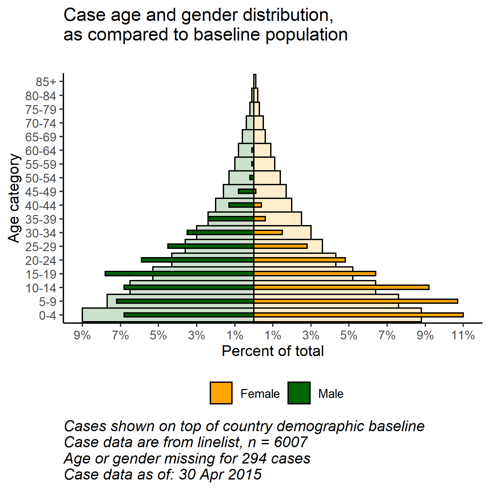

2 Age pyramids
Age pyramids can be useful to show patterns by age group. They can show gender, or the distribution of other characteristics.
These tabs demonstrate how to produce age pyramids using:
- Fast & easy: Using the apyramid package
- More flexible: Using
ggplot()
- Having baseline demographics displayed in the background of the pyramid
- Using pyramid-style plots to show other types of data (e.g responses to Likert-style questions)
2.1 Overview

Age/gender demographic pyramids in R are generally made with ggplot() by creating two barplots (one for each gender), converting one’s values to negative values, and flipping the x and y axes to display the barplots vertically.
Here we offer a quick approach through the apyramid package:
- More customizable code using the raw
ggplot()commands
- How to combine case demographic data and compare with that of a baseline population (as shown above)
- Application of these methods to show other types of data (e.g. responses to Likert-style survey questions)
2.2 Preparation
Preparation
For this tab we use the linelist dataset that is cleaned in the Cleaning tab.
To make a traditional age/sex demographic pyramid, the data must first be cleaned in the following ways:
- The gender column must be cleaned.
- Age should be in an age category column, and should be an of class Factor (with correctly ordered levels)
Load packages
First, load the packages required for this analysis:
pacman::p_load(rio, # to import data
here, # to locate files
tidyverse, # to clean, handle, and plot the data (includes ggplot2 package)
apyramid, # a package dedicated to creating age pyramids
stringr) # working with strings for titles, captions, etc.Load the data
Check class of variables
Ensure that the age variable is class Numeric, and check the class and order of levels of age_cat and age_cat5
## [1] "numeric"## [1] "factor"## [1] "factor"##
## 0-4 5-9 10-14 15-19 20-29 30-49 50-69 70+ <NA>
## 1054 1153 957 889 1065 658 24 0 88##
## 0-4 5-9 10-14 15-19 20-24 25-29 30-34 35-39 40-44 45-49 50-54 55-59 60-64 65-69 70-74 75-79 80-84 85+ <NA>
## 1054 1153 957 889 570 495 315 171 113 59 14 6 2 2 0 0 0 0 882.3 apyramid package
apyramid package
The package apyramid allows you to quickly make an age pyramid. For more nuanced situations, see the tab on using ggplot() to make age pyramids. You can read more about the apyramid package in its Help page by entering ?age_pyramid in your R console.
2.3.1 Linelist data
Linelist data
Using the cleaned linelist dataset, we can create an age pyramid with just one simple command. If you need help cleaning your data, see the handbook page on Cleaning data (LINK). In this command:
- The data argument is set as the
linelistdataframe
- The age_group argument is set to the name (in quotes) of the numeric category variable (in this case
age_cat5)
- The split_by argument (bar colors) should be a binary column (in this case “gender”)
## Warning: 281 missing rows were removed (88 values from `age_cat5` and 281 values from `gender`). When using agepyramid package, if the
When using agepyramid package, if the split_by column is binary (e.g. male/female, or yes/no), then the result will appear as a pyramid. However if there are more than two values in the split_by column (not including NA), the pyramid will appears as a faceted barplot with empty bars in the background indicating the range of the un-faceted data set for the age group. Values of split_by will appear as labels at top of each facet. For example below if the split_by variable is “hospital”.
apyramid::age_pyramid(data = linelist,
age_group = "age_cat5",
split_by = "hospital",
na.rm = FALSE) # show a bar for patients missing age, (note: this changes the pyramid into a faceted barplot)
Missing values
Rows missing values for the split_by or age_group columns, if coded as NA, will not trigger the faceting shown above. By default these rows will not be shown. However you can specify that they appear, in an adjacent barplot and as a separate age group at the top, by specifying na.rm = FALSE.
apyramid::age_pyramid(data = linelist,
age_group = "age_cat5",
split_by = "gender",
na.rm = FALSE) # show patients missing age or gender
Proportions, colors, & aesthetics
By default, the bars display counts (not %), a dashed mid-line for each group is shown, and the colors are green/purple. Each of these parameters can all be adjusted, as shown below:
You can also add additional ggplot() commands to the plot using the standard ggplot() “+” syntax, such as aesthetic themes and label adjustments:
apyramid::age_pyramid(data = linelist,
age_group = "age_cat5",
split_by = "gender",
proportional = TRUE, # show percents, not counts
show_midpoint = FALSE, # remove bar mid-point line
#pal = c("orange", "purple") # can specify alt. colors here (but not labels, see below)
)+
# additional ggplot commands
theme_minimal()+ # simplify the background
scale_fill_manual(values = c("orange", "purple"), # to specify colors AND labels
labels = c("Male", "Female"))+
labs(y = "Percent of all cases", # note that x and y labels are switched (see ggplot tab)
x = "Age categories",
fill = "Gender",
caption = "My data source and caption here",
title = "Title of my plot",
subtitle = "Subtitle with \n a second line...")+
theme(
legend.position = "bottom", # move legend to bottom
axis.text = element_text(size = 10, face = "bold"), # fonts/sizes, see ggplot tips page
axis.title = element_text(size = 12, face = "bold"))## Warning: 281 missing rows were removed (88 values from `age_cat5` and 281 values from `gender`).## Scale for 'fill' is already present. Adding another scale for 'fill', which will replace the existing scale.
2.3.2 Aggregated data
Aggregated data
The examples above assume your data are in a linelist-like format, with one row per observation. If your data are already aggregated into counts by age category, you can still use the apyramid package, as shown below.
Let’s say that your dataset looks like this, with columns for age category, and male counts, female counts, and missing counts.
(see the handbook page on Transforming data for tips)
## `summarise()` has grouped output by 'age_cat5'. You can override using the `.groups` argument.# View the aggregated data
DT::datatable(demo_agg, rownames = FALSE, filter="top", options = list(pageLength = 5, scrollX=T) )ggplot() perfers data in “long” format, so first pivot the data to be “long” with the pivot_longer() function from dplyr.
# pivot the aggregated data into long format
demo_agg_long <- demo_agg %>%
pivot_longer(c(f, m, missing_gender), # cols to elongate
names_to = "gender", # name for new col of categories
values_to = "counts") %>% # name for new col of counts
mutate(gender = na_if(gender, "missing_gender")) # convert "missing_gender" to NA# View the aggregated data
DT::datatable(demo_agg_long, rownames = FALSE, filter="top", options = list(pageLength = 5, scrollX=T) )Then use the split_by and count arguments of age_pyramid() to specify the respective columns:
apyramid::age_pyramid(data = demo_agg_long,
age_group = "age_cat5",
split_by = "gender",
count = "counts") # give the column name for the aggregated counts## Warning: Removed 20 rows containing missing values (position_stack).## Warning: Removed 19 rows containing missing values.
Note in the above, that the factor order of “m” and “f” is different (pyramid reversed). To adjust the order you must re-define gender in the aggredated data as a Factor and order the levels as desired.
2.4 ggplot()
ggplot()
Using ggplot() to build your age pyramid allows for more flexibility, but requires more effort and understanding of how ggplot() works. It is also easier to accidentally make mistakes.
apyramid uses ggplot() in the background (and accepts ggplot() commands added), but this page shows how to adjust or recreate a pyramid only using ggplot(), if you wish.
2.4.1 Constructing the plot
Constructing the plot
First, understand that to make such a pyramid using ggplot() the approach is to:
Within the
ggplot(), create two graphs by age category. Create one for each of the two grouping values (in this case gender). See filters applied to thedataarguments in eachgeom_histogram()commands below.If using
geom_histogram(), the graphs operate off the numeric column (e.g.age_years), whereas if usinggeom_barplot()the graphs operate from an ordered Factor (e.g.age_cat5).One graph will have positive count values, while the other will have its counts converted to negative values - this allows both graphs to be seen and compared against each other in the same plot.
The command
coord_flip()switches the X and Y axes, resulting in the graphs turning vertical and creating the pyramid.Lastly, the counts-axis labels must be specified so they appear as “positive” counts on both sides of the pyramid (despite the underlying values on one side being negative).
A simple version of this, using geom_histogram(), is below:
# begin ggplot
ggplot(data = linelist, aes(x = age, fill = gender)) +
# female histogram
geom_histogram(data = filter(linelist, gender == "f"),
breaks = seq(0,85,5),
colour = "white") +
# male histogram (values converted to negative)
geom_histogram(data = filter(linelist, gender == "m"),
breaks = seq(0,85,5),
aes(y=..count..*(-1)),
colour = "white") +
# flip the X and Y axes
coord_flip() +
# adjust counts-axis scale
scale_y_continuous(limits = c(-600, 900),
breaks = seq(-600,900,100),
labels = abs(seq(-600, 900, 100)))
DANGER: If the limits of your counts axis are set too low, and a counts bar exceeds them, the bar will disappear entirely or be artificially shortened! Watch for this if analyzing data which is routinely updated. Prevent it by having your count-axis limits auto-adjust to your data, as below.
There are many things you can change/add to this simple version, including:
- Auto adjust counts-axis count scale to your data (avoid errors discussed in warning below)
- Manually specify colors and legend labels
# create dataset with proportion of total
pyramid_data <- linelist %>%
group_by(age_cat5, gender) %>%
summarize(counts = n()) %>%
ungroup() %>%
mutate(percent = round(100*(counts / sum(counts, na.rm=T)),1),
percent = case_when(
gender == "f" ~ percent,
gender == "m" ~ -percent,
TRUE ~ NA_real_))## `summarise()` has grouped output by 'age_cat5'. You can override using the `.groups` argument.max_per <- max(pyramid_data$percent, na.rm=T)
min_per <- min(pyramid_data$percent, na.rm=T)
# begin ggplot
ggplot()+ # default x-axis is age in years;
# case data graph
geom_bar(data = pyramid_data,
stat = "identity",
aes(x = age_cat5,
y = percent,
fill = gender), #
colour = "white")+ # white around each bar
# flip the X and Y axes to make pyramid vertical
coord_flip()+
# adjust the axes scales (remember they are flipped now!)
#scale_x_continuous(breaks = seq(0,100,5), labels = seq(0,100,5)) +
scale_y_continuous(limits = c(min_per, max_per),
breaks = seq(floor(min_per), ceiling(max_per), 2),
labels = paste0(abs(seq(floor(min_per), ceiling(max_per), 2)), "%"))+
# designate colors and legend labels manually
scale_fill_manual(
values = c("f" = "orange",
"m" = "darkgreen"),
labels = c("Female", "Male"),
) +
# label values (remember X and Y flipped now)
labs(
x = "Age group",
y = "Percent of total",
fill = NULL,
caption = stringr::str_glue("Data are from linelist \nn = {nrow(linelist)} (age or sex missing for {sum(is.na(linelist$gender) | is.na(linelist$age_years))} cases) \nData as of: {format(Sys.Date(), '%d %b %Y')}")) +
# optional aesthetic themes
theme(
panel.grid.major = element_blank(),
panel.grid.minor = element_blank(),
panel.background = element_blank(),
axis.line = element_line(colour = "black"),
plot.title = element_text(hjust = 0.5),
plot.caption = element_text(hjust=0, size=11, face = "italic")) +
ggtitle(paste0("Age and gender of cases"))## Warning: Removed 10 rows containing missing values (position_stack).
2.4.2 Compare to baseline
Compare to baseline
With the flexibility of ggplot(), you can have a second layer of bars in the background that represent the true population pyramid. This can provide a nice visualization to compare the observed counts with the baseline.
Import and view the population data
# display the linelist data as a table
DT::datatable(pop, rownames = FALSE, filter="top", options = list(pageLength = 10, scrollX=T) )First some data management steps:
Here we record the order of age categories that we want to appear. Due to some quirks the way the ggplot() is implemented, it is easiest to store these as a character vector and use them later in the plotting function.
# record correct age cat levels
age_levels <- c("0-4","5-9", "10-14", "15-19", "20-24",
"25-29","30-34", "35-39", "40-44", "45-49",
"50-54", "55-59", "60-64", "65-69", "70-74",
"75-79", "80-84", "85+")Combine the population and case data through the dplyr function bind_rows():
- First, ensure they have the exact same column names, age categories values, and gender values
- Make them have the same data structure: columns of age category, gender, counts, and percent of total
- Bind them together, one on-top of the other (
bind_rows())
# create/transform populaton data, with percent of total
########################################################
pop_data <- pivot_longer(pop, c(m, f), names_to = "gender", values_to = "counts") %>% # pivot gender columns longer
mutate(data = "population", # add column designating data source
percent = round(100*(counts / sum(counts, na.rm=T)),1), # calculate % of total
percent = case_when( # if male, convert % to negative
gender == "f" ~ percent,
gender == "m" ~ -percent,
TRUE ~ NA_real_))Review the changed population dataset
# display the linelist data as a table
DT::datatable(pop_data, rownames = FALSE, filter="top", options = list(pageLength = 5, scrollX=T) )Now implement the same for the case linelist. Slightly different because it begins with case-rows, not counts.
# create case data by age/gender, with percent of total
#######################################################
case_data <- linelist %>%
group_by(age_cat5, gender) %>% # aggregate linelist cases into age-gender groups
summarize(counts = n()) %>% # calculate counts per age-gender group
ungroup() %>%
mutate(data = "cases", # add column designating data source
percent = round(100*(counts / sum(counts, na.rm=T)),1), # calculate % of total for age-gender groups
percent = case_when( # convert % to negative if male
gender == "f" ~ percent,
gender == "m" ~ -percent,
TRUE ~ NA_real_))## `summarise()` has grouped output by 'age_cat5'. You can override using the `.groups` argument.Review the changed case dataset
# display the linelist data as a table
DT::datatable(case_data, rownames = FALSE, filter="top", options = list(pageLength = 5, scrollX=T) )Now the two datasets are combined, one on top of the other (same column names)
# combine case and population data (same column names, age_cat values, and gender values)
pyramid_data <- bind_rows(case_data, pop_data)Store the maximum and minimum percent values, used in the plotting funtion to define the extent of the plot (and not cut off any bars!)
# Define extent of percent axis, used for plot limits
max_per <- max(pyramid_data$percent, na.rm=T)
min_per <- min(pyramid_data$percent, na.rm=T)Now the plot is made with ggplot():
- One bar graph of population data (wider, more transparent bars)
- One bar graph of case data (small, more solid bars)
# begin ggplot
##############
ggplot()+ # default x-axis is age in years;
# population data graph
geom_bar(data = filter(pyramid_data, data == "population"),
stat = "identity",
aes(x = age_cat5,
y = percent,
fill = gender),
colour = "black", # black color around bars
alpha = 0.2, # more transparent
width = 1)+ # full width
# case data graph
geom_bar(data = filter(pyramid_data, data == "cases"),
stat = "identity", # use % as given in data, not counting rows
aes(x = age_cat5, # age categories as original X axis
y = percent, # % as original Y-axis
fill = gender), # fill of bars by gender
colour = "black", # black color around bars
alpha = 1, # not transparent
width = 0.3)+ # half width
# flip the X and Y axes to make pyramid vertical
coord_flip()+
# adjust axes order, scale, and labels (remember X and Y axes are flipped now)
# manually ensure that age-axis is ordered correctly
scale_x_discrete(limits = age_levels)+
# set percent-axis
scale_y_continuous(limits = c(min_per, max_per), # min and max defined above
breaks = seq(floor(min_per), ceiling(max_per), by = 2), # from min% to max% by 2
labels = paste0( # for the labels, paste together...
abs(seq(floor(min_per), ceiling(max_per), by = 2)), # ...rounded absolute values of breaks...
"%"))+ # ... with "%"
# floor(), ceiling() round down and up
# designate colors and legend labels manually
scale_fill_manual(
values = c("f" = "orange", # assign colors to values in the data
"m" = "darkgreen"),
labels = c("f" = "Female",
"m"= "Male"), # change labels that appear in legend, note order
) +
# plot labels, titles, caption
labs(
title = "Case age and gender distribution,\nas compared to baseline population",
subtitle = "",
x = "Age category",
y = "Percent of total",
fill = NULL,
caption = stringr::str_glue("Cases shown on top of country demographic baseline\nCase data are from linelist, n = {nrow(linelist)}\nAge or gender missing for {sum(is.na(linelist$gender) | is.na(linelist$age_years))} cases\nCase data as of: {format(max(linelist$date_onset, na.rm=T), '%d %b %Y')}")) +
# optional aesthetic themes
theme(
legend.position = "bottom", # move legend to bottom
panel.grid.major = element_blank(),
panel.grid.minor = element_blank(),
panel.background = element_blank(),
axis.line = element_line(colour = "black"),
plot.title = element_text(hjust = 0),
plot.caption = element_text(hjust=0, size=11, face = "italic"))## Warning: Removed 10 rows containing missing values (position_stack).
2.5 Likert scale
Likert scale
The techniques used to make a population pyramid with ggplot() can also be used to make plots of Likert-scale survey data.
Import the data
Start with data that looks like this, with a categorical classification of each respondent (status) and their answers to 8 questions on a 4-point Likert-type scale (“Very poor”, “Poor”, “Good”, “Very good”).
# display the linelist data as a table
DT::datatable(likert_data, rownames = FALSE, filter="top", options = list(pageLength = 10, scrollX=T) )First, some data management steps:
- Pivot the data longer
- Create new column
directiondepending on whether response was generally “positive” or “negative”
- Set the Factor level order for the
statuscolumn and theResponsecolumn
- Store the max count value so limits of plot are appropriate
melted <- pivot_longer(likert_data, Q1:Q8, names_to = "Question", values_to = "Response") %>%
mutate(direction = case_when(
Response %in% c("Poor","Very Poor") ~ "Negative",
Response %in% c("Good", "Very Good") ~ "Positive",
TRUE ~ "Unknown"),
status = factor(status, levels = rev(c(
"Senior", "Intermediate", "Junior"))),
Response = factor(Response, levels = c("Very Good", "Good",
"Very Poor", "Poor"))) # must reverse Very Poor and Poor for ordering to work
melted_max <- melted %>%
group_by(status, Question) %>%
summarize(n = n())## `summarise()` has grouped output by 'status'. You can override using the `.groups` argument.Now make the plot:
# make plot
ggplot()+
# bar graph of the "negative" responses
geom_bar(data = filter(melted,
direction == "Negative"),
aes(x = status,
y=..count..*(-1), # counts inverted to negative
fill = Response),
color = "black",
closed = "left",
position = "stack")+
# bar graph of the "positive responses
geom_bar(data = filter(melted, direction == "Positive"),
aes(x = status, fill = Response),
colour = "black",
closed = "left",
position = "stack")+
# flip the X and Y axes
coord_flip()+
# Black vertical line at 0
geom_hline(yintercept = 0, color = "black", size=1)+
# convert labels to all positive numbers
scale_y_continuous(limits = c(-ceiling(melted_max/10)*11, ceiling(melted_max/10)*10), # seq from neg to pos by 10, edges rounded outward to nearest 5
breaks = seq(-ceiling(melted_max/10)*10, ceiling(melted_max/10)*10, 10),
labels = abs(unique(c(seq(-ceiling(melted_max/10)*10, 0, 10),
seq(0, ceiling(melted_max/10)*10, 10))))) +
# color scales manually assigned
scale_fill_manual(values = c("Very Good" = "green4", # assigns colors
"Good" = "green3",
"Poor" = "yellow",
"Very Poor" = "red3"),
breaks = c("Very Good", "Good", "Poor", "Very Poor"))+ # orders the legend
# facet the entire plot so each question is a sub-plot
facet_wrap(~Question, ncol = 3)+
# labels, titles, caption
labs(x = "Respondent status",
y = "Number of responses",
fill = "")+
ggtitle(str_glue("Likert-style responses\nn = {nrow(likert_data)}"))+
# aesthetic settings
theme_minimal()+
theme(axis.text = element_text(size = 12),
axis.title = element_text(size = 14, face = "bold"),
strip.text = element_text(size = 14, face = "bold"), # facet sub-titles
plot.title = element_text(size = 20, face = "bold"),
panel.background = element_rect(fill = NA, color = "black")) # black box around each facet## Warning: Ignoring unknown parameters: closed
## Warning: Ignoring unknown parameters: closed
2.6 Resources
Resources
This tab should stay with the name “Resources”. Links to other online tutorials or resources.